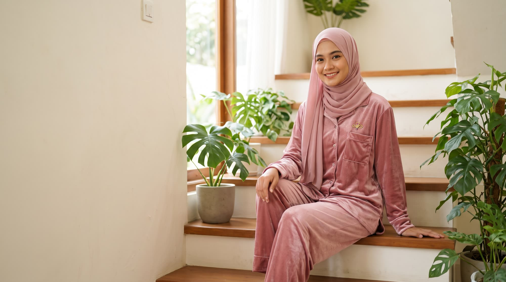

Cerita HARIAKU
HARIAKU berarti hari-hariku. Hari yang dimulai sebelum subuh, diisi rapat, antar-jemput, dan belanja, lalu ditutup dengan obrolan di meja makan. Kami membuat pakaian untuk hari seperti itu.
- Tumbuh bersama setiap fase hidupmu
- Menemani dari pagi sampai malam
- Berbagi lewat wakaf dari setiap pembelian
- Bermakna di setiap jahitan

